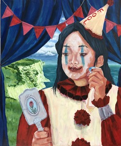
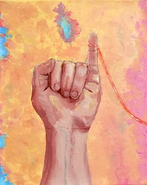
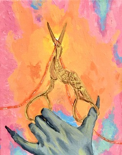
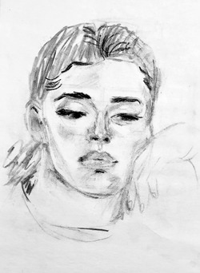
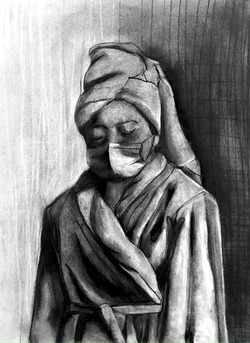
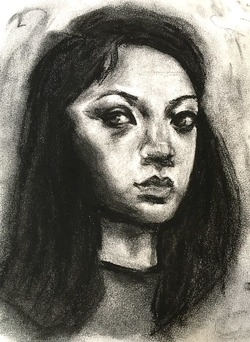
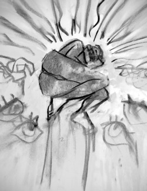
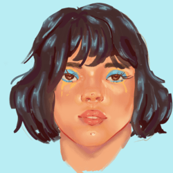
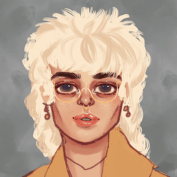

The Fool, Acrylic on Canvas, 2020. A Testament to my Depression, Acrylic on Canvas, 2022. The Three Muses, Ink on Mixed Media Paper, 2022.

The Known, Acrylic on Canvas, 2020.

Death Cuts the Ties, Acrylic on Canvas, 2020.The Intangible, Acrylic on Canvas, 2020.Rebirth, Gouache on Paper, 2021.
Charcoal Drawings
Mannequin Still Life, Charcoal on Paper, 2022.

Emily, Vine Charcoal on Paper, 2021.

Pandemic: Peace Variant, Charcoal on Paper, 2022.

Self Portrait, Charcoal on Paper, 2019.

Perception, Charcoal on Newsprint, 2022.
Digital Paintings
Untitled, Digital Painting on Procreate, 2020.

Untitled, Digital Painting on Procreate, 2020.

Untitled, Digital Painting on Procreate, 2020.Untitled, Digital Painting on Procreate, 2020.